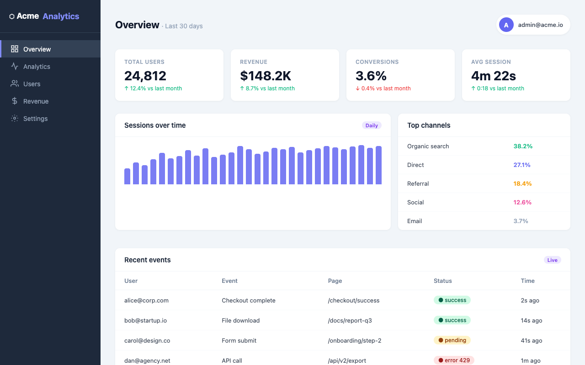
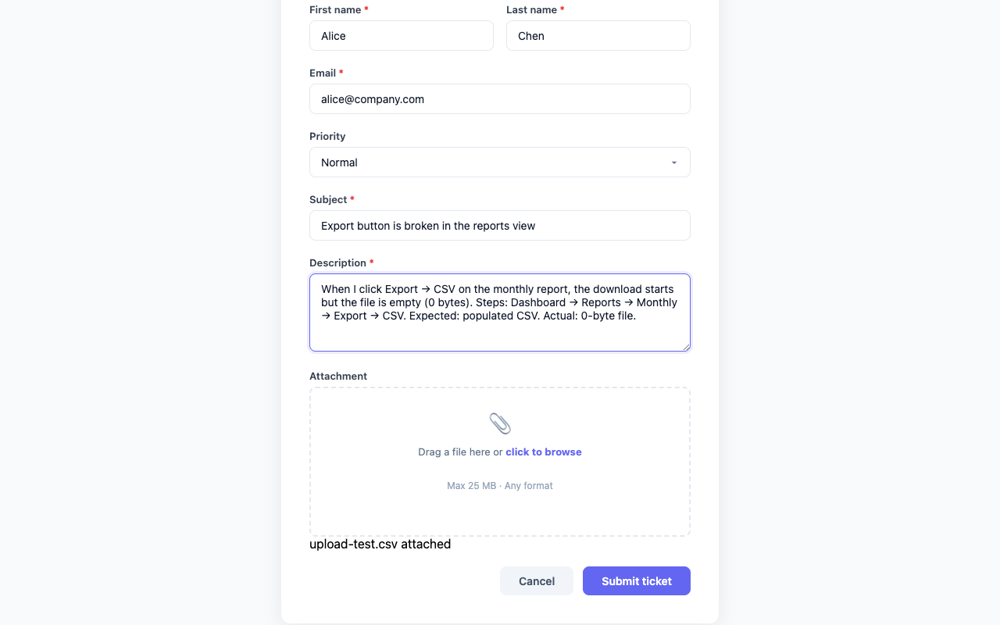
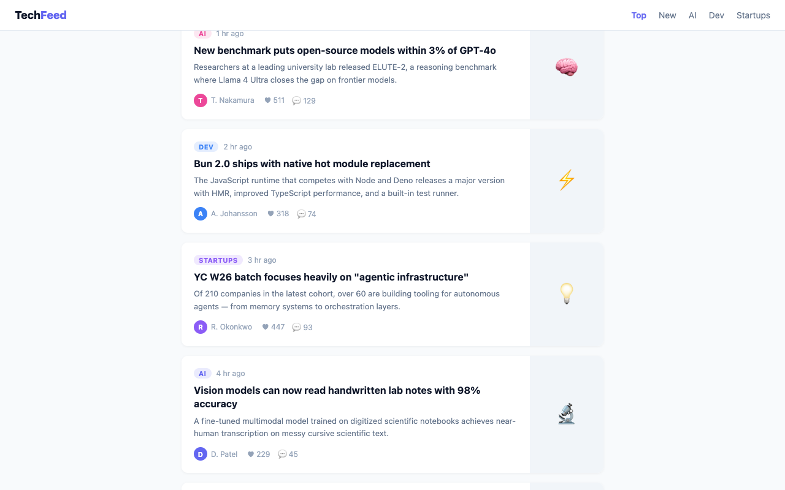
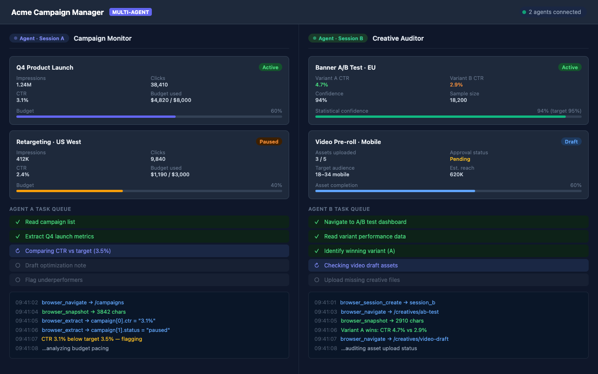

Read a gated dashboard.
Read a dashboard that lives behind your company login. The agent never sees a password; it borrows the session your browser already holds.
browser_click → live KPIs, no sign-in step
PolterTab gives any MCP agent, from Claude Code to Cursor to one you wrote yourself, hands inside the Chrome you’re already signed into. It clicks, fills, scrolls, and scrapes with your sessions, on your machine.
npm install -g poltertab && poltertab setup
Open source, ISC. The server makes one outbound call a day, a version check, and you can turn it off.
Every automation tool hands your agent a factory-fresh browser. Its first task becomes the login wall, then the CAPTCHA, then the two-factor prompt, and the real job never starts. PolterTab points the agent at the browser where you already got past all of that, once, yourself. The dashboard you checked this morning and the admin tool your company runs are already open to it.
Captured from real sessions in a test profile.

Read a dashboard that lives behind your company login. The agent never sees a password; it borrows the session your browser already holds.
browser_click → live KPIs, no sign-in step

File a support ticket and attach the CSV. Uploads come only from folders you listed in config. The ghost cannot reach into ~/.ssh, even if you ask it to.
browser_upload_file → march-invoices.csv attached

Walk a feed that loads as it scrolls. browser_smart_scroll paces the page while network capture reads the API responses behind it, so obfuscated markup stops being your problem.
browser_smart_scroll + browser_scrape → every story, as JSON

Point Claude Code and Cursor at the same Chrome. The first server to claim port 7822 coordinates, later ones proxy through it, and each agent keeps to its own tab.
browser_session_create → two agents, separate tabs
Your agent speaks MCP (Model Context Protocol, the standard AI tools use to call external tools) to a small Node server. The server relays each command to the Chrome extension over a WebSocket on localhost:7822. The extension does the clicking, typing, and reading, and the result travels the same path back. No hop crosses the network.
Any MCP client, speaking over stdio.
stdioA local Node.js process.
localhost:7822Runs the commands with Chrome APIs and the DOM.
in the pageThe profile you’re signed into, in the window you can see.
back, same pathSeveral agents can share one browser with zero configuration. The first server to claim the port serves the extension; up to 50 more proxy through it, each with its own current tab.
It’s a version check against registry.npmjs.org, at most once a day, cached locally, and POLTERTAB_NO_UPDATE_CHECK=1 turns it off. The extension makes no outbound requests at all. You can verify both claims in the source; the check lives in one small file.
Agent, server, and extension all run on your machine, and page content moves between them over localhost. PolterTab has no servers of its own and nothing to send data to.
browser_upload_file accepts a file only when it sits inside a folder you wrote into ~/.poltertab/config.json. Paths like ~/.ssh, ~/.aws, ~/.gnupg, and system directories stay blocked even when a folder you allowlisted would reach them.
The ghost acts in your visible browser, inside a tab group labeled “PolterTab”. You can follow every click, and you can close the tab mid-task.
Extension and server are open source under ISC, and npm builds are published with provenance, which ties the package you installed to the exact commit it was built from.
poltertab setup registers the server with Claude Code for you. Claude Desktop, Cursor, and anything else that speaks MCP take one entry in their config file; the README shows each one.
Node 18 or newer.
npm install -g poltertab
poltertab setup
Setup runs in about 5 seconds. The wizard registers the MCP server, installs a browser-navigation skill, and adds a CLAUDE.md note so your agent knows the tools exist. Re-running it is safe; each step detects its own prior work.
chrome://extensions/ and switch on Developer mode.manifest.json.Add to Chrome from the Web Store for a one-click install.
No. Commands and page content travel from agent to server to extension over stdio and a localhost WebSocket. The server’s only outbound request is the daily version check described above, and POLTERTAB_NO_UPDATE_CHECK=1 disables it.
It can’t open your password manager or Chrome’s cookie store. It sees what a script running in the page sees: the rendered page and the network responses that page loads. It acts with your session, because that’s the product, but the credentials behind that session are never read or transmitted.
Only from folders you listed in ~/.poltertab/config.json under upload_allowed_paths. Everything else is refused, and sensitive paths like ~/.ssh and ~/.aws are refused even if a listed folder would reach them.
browser_smart_scroll walks virtualized and infinite-scroll pages. browser_get_network_state captures the API and GraphQL responses behind an obfuscated DOM. Site memory keeps per-domain notes on obstacles and fixes, so the agent only learns a hostile site once.
Yes, up to 50 plus the primary. The first server to bind the port coordinates; later ones proxy through it automatically, and each agent gets its own current tab.
For one feature: file uploads through the OS file picker, which Chrome’s DevTools Protocol is the only way to intercept. It attaches to the one tab for the length of the upload and detaches after, and Chrome shows its banner the whole time.
Yes, extension and server both, under ISC. npm releases are published with provenance.
npm install -g poltertab && poltertab setup